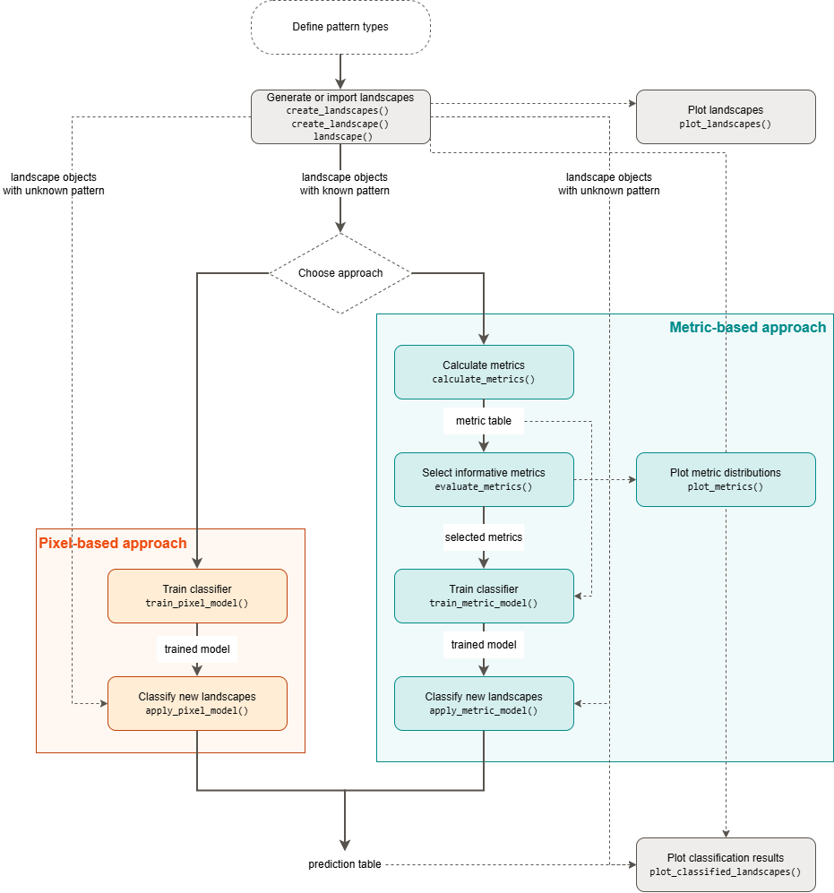

library(patternscaper)
set.seed(1)
# 1. Create training landscapes with known patterns
training <- create_landscapes(
n = 100,
patterns = c("sharp", "clustered", "bands")
)
# 2. Calculate landscape metrics and keep the most informative ones
metrics <- calculate_metrics(training)
selected <- evaluate_metrics(metrics, metrics_number = 10)
# 3. Train a classifier on the selected metrics
set.seed(2)
model <- train_metric_model(
metrics,
metrics_selected = selected,
verbose = FALSE
)
# 4. Classify new landscapes
# Create new landscapes
new_landscapes <- create_landscapes(
n = 10,
patterns = c("sharp", "clustered", "bands")
)
classification_results <- apply_metric_model(
new_landscapes,
model,
verbose = FALSE
)
# Check the predictions the model made
classification_results$predictions
#> # A tibble: 10 × 8
#> landscape_id landscape_name actual_class predicted_class score bands
#> <int> <chr> <chr> <chr> <dbl> <dbl>
#> 1 1 bands_1_rot198 bands bands 1 1
#> 2 2 clustered_2_rot172 clustered clustered 1 0
#> 3 3 clustered_3_rot35 clustered clustered 0.999 0
#> 4 4 bands_4_rot112 bands bands 1 1
#> 5 5 sharp_5_rot252 sharp sharp 1 0
#> 6 6 bands_6_rot138 bands bands 1 1
#> 7 7 sharp_7_rot78 sharp sharp 0.983 0.0166
#> 8 8 sharp_8_rot130 sharp sharp 0.998 0
#> 9 9 sharp_9_rot226 sharp sharp 1.000 0.000220
#> 10 10 clustered_10_rot260 clustered clustered 1 0
#> # ℹ 2 more variables: clustered <dbl>, sharp <dbl>
# Because artificial landscapes keep their true pattern labels, apply_metric_model()
# also evaluates the predictions
classification_results$performance$confusion_matrix
#> Actual
#> Predicted bands clustered sharp
#> bands 3 0 0
#> clustered 0 3 0
#> sharp 0 0 4
classification_results$performance$accuracy
#> [1] 1
classification_results$performance$per_class_metrics
#> # A tibble: 3 × 5
#> class count recall precision f1_score
#> <chr> <dbl> <dbl> <dbl> <dbl>
#> 1 bands 3 1 1 1
#> 2 clustered 3 1 1 1
#> 3 sharp 4 1 1 1patternscaper supports two supervised classification approaches. The metric-based approach uses landscape metrics as features and the pixel-based approach uses a convolutional neural network (CNN) to classify patterns directly from raster-cell values.
The classification workflow
The classification workflow has six steps:
- Define the pattern classes to distinguish. The classification is supervised, so choose classes that are appropriate for the research question.
-
Prepare training landscapes with known patterns. Use artificial landscapes created with
create_landscapes()orcreate_landscape(), or wrap your own rasters or matrices withlandscape(). - Choose a workflow: the metric-based approach (interpretable and effective with relatively few training landscapes) or the pixel-based approach (uses the raw pixel information from the landscapes but typically needs more training data). For guidance on which workflow to choose, see below.
-
Calculate and select landscape metrics (metric-based workflow only) with
calculate_metrics()andevaluate_metrics(). -
Train a classifier on the selected metrics with
train_metric_model(), or on raster cells withtrain_pixel_model(). Both functions support optional cross-validation during training. -
Classify new landscapes with
apply_metric_model()orapply_pixel_model(), and inspect the results withplot_classified_landscapes().
The paper’s supplementary information discusses parameter choice and workflow configuration.

Choosing a classification approach
Choose the approach according to the study objective.
Use the metric-based approach if
- ecological interpretability is important
- the number of training landscapes is limited
- you want to identify which landscape characteristics distinguish pattern types
Use the pixel-based approach if
- a sufficiently large training dataset is available
- the complete spatial configuration should be used for classification
When computationally feasible, we recommend applying both approaches, as agreement between the two approaches can increase confidence in the classification, whereas discrepancies may provide insights into the strengths and limitations of the approaches.
Quick example
This is the shortest complete example of the metric-based approach, using three ecotone pattern types. The full guide covers metric selection, cross-validation, and plotting.
Next steps
Continue with the guide that matches your data and chosen approach:
- Classify with landscape metrics shows the complete metric-based workflow
- Classify with pixels (CNN) shows the pixel-based workflow
Topic guides:
- Create landscapes: Generate artificial landscapes with known patterns
- Import your own landscapes: Convert your own rasters or matrices to the package’s landscape format
- Calculate landscape metrics: Calculate and inspect landscape metrics
- Set up Keras: Install the software required for the pixel-based workflow